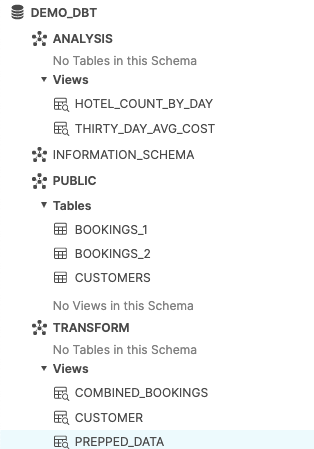

수많은 비즈니스는 민첩성, 성장 및 운영 효율성을 지원할 수 있는 최신 데이터 전략이 탑재된 플랫폼을 고려하고 있습니다. Snowflake는 데이터 클라우드입니다. 이는 인프라 관리와 유지 관리 대신 데이터와 분석에 집중할 수 있도록 모든 비즈니스를 위해 데이터 파이프라인을 간소화할 수 있는 미래 지향적인 솔루션입니다.
Apache Airflow는 데이터 파이프라인을 작성 및 관리하는 데 사용할 수 있는 오픈 소스 워크플로우 관리 플랫폼입니다. Airflow는 작업의 방향성 비순환 그래프(DAG)로 만들어진 워크플로우를 사용합니다.
dbt는 dbt Labs에서 유지하는 최신 데이터 엔지니어링 프레임워크입니다. Snowflake와 같은 클라우드 데이터 플랫폼을 활용하는 최신 데이터 아키텍처에서 큰 인기를 얻고 있습니다. dbt CLI는 dbt 프로젝트를 실행하기 위한 명령줄 인터페이스입니다. CLI는 무료로 사용할 수 있으며 오픈 소스입니다.
이 가상 실습 랩에서는 데이터 변환 작업 스케줄러를 생성하기 위해 Airflow와 dbt를 사용하는 단계별 가이드를 따라 하게 됩니다.
시작하겠습니다.
사전 필요 조건 및 지식
이 가이드는 사용자가 Python 및 dbt에 대한 기본적인 실무 지식을 보유하고 있다고 가정합니다.
학습할 내용
- 데이터 스케줄러를 생성하기 위해 Airflow와 같은 오픈 소스 도구 사용하기
- DAG를 작성하고 이를 Airflow에 업로드하기
- dbt, Airflow 및 Snowflake를 사용하여 확장 가능한 파이프라인 구축하기
필요한 것
시작하기 전에 다음이 필요합니다.
- Snowflake
- Snowflake 계정
- 적절한 권한을 포함하여 생성된 Snowflake 사용자 이 사용자에게는 DEMO_DB 데이터베이스에서 객체를 생성하기 위한 권한이 필요합니다.
- GitHub
- GitHub 계정 GitHub 계정이 아직 없다면 무료로 생성할 수 있습니다. 시작하려면 GitHub 가입 페이지를 방문하십시오.
- GitHub 리포지토리 아직 리포지토리를 생성하지 않았거나 새로운 리포지토리를 생성하고 싶다면, 새로운 리포지토리를 생성합니다. 유형으로
Public을 선택합니다(하지만 두 가지 모두 사용할 수 있음). 또한, 지금은 README, .gitignore 및 라이선스 추가를 건너뛸 수 있습니다. - 통합 개발 환경(IDE)
- Git과 통합되며 선호하는 IDE Git과 통합되며 선호하는 IDE가 아직 없다면, 훌륭한 무료 오픈 소스 IDE인 Visual Studio Code를 추천합니다.
- 컴퓨터에 프로젝트 리포지토리 복제 Git 리포지토리에 대한 연결 세부 정보를 위해 리포지토리를 열고 페이지 상단 부근에 있는
HTTPS링크를 복사합니다. 최소 하나의 파일이 리포지토리에 있다면 페이지 상단 부근에 있는 녹색Code아이콘을 클릭하고HTTPS링크를 복사합니다. 이 링크를 VS Code 또는 선호하는 IDE에서 사용하여 리포지토리를 컴퓨터에 복제합니다. - Docker
- 노트북에 Docker Desktop 설치 Airflow를 컨테이너로 실행할 것입니다. Docker 설정 지침에 따라 운영 체제에 Docker Desktop을 설치하십시오.
구축할 것
- dbt 및 Snowflake와 간단히 작동하는 Airflow 파이프라인
우선, 아래 명령을 실행하여 폴더를 생성하겠습니다.
mkdir dbt_airflow && cd "$_"
다음으로 Airflow의 docker-compose 파일을 가져오겠습니다. 이 작업을 수행하기 위해 로컬 노트북에 대해 파일의 curl 명령을 실행하겠습니다.
curl -LfO 'https://airflow.apache.org/docs/apache-airflow/2.3.0/docker-compose.yaml'
이제 docker-compose 파일을 조정하겠습니다. 2개의 폴더를 볼륨으로 추가합니다. dags는 Airflow가 선택하여 분석할 수 있도록 Airflow DAG가 있는 폴더입니다. dbt는 dbt 모델과 CSV 파일을 구성한 폴더입니다.
volumes:
- ./dags:/opt/airflow/dags
- ./logs:/opt/airflow/logs
- ./plugins:/opt/airflow/plugins
- ./dbt:/dbt # add this in
- ./dags:/dags # add this in
이제 추가 docker-compose 매개변수로 추가 파일을 생성해야 합니다. 이렇게 하면 컨테이너가 시작될 때 dbt가 설치됩니다.
.env
_PIP_ADDITIONAL_REQUIREMENTS=dbt==0.19.0
이제 dbt 프로젝트와 dags 폴더를 생성해야 합니다.
dbt 프로젝트에 대해 dbt init dbt 명령을 실행합니다. 추후 4단계에서는 여기에서 dbt를 구성하게 됩니다.
dags 폴더에 대해 다음 작업을 수행해 폴더를 생성합니다.
mkdir dags
트리 리포지토리는 다음과 같아야 합니다.

이제 리포지토리를 설정했으니 dbt 프로젝트를 구성 및 설정하겠습니다.
시작하기 전에 dbt 프로젝트를 위해 어떤 작업을 수행할지 알아보겠습니다.
아래 다이어그램에서 확인할 수 있듯이 bookings_1, bookings_2 및 customers 라는 3개의 CSV 파일이 있습니다. 이러한 CSV 파일을 테이블로 Snowflake에 시드하겠습니다. 이 부분은 추후 4단계에서 자세히 살펴볼 것입니다.
이에 따라 bookings_1 및 bookings_2 테이블을 combined_bookings와 병합하겠습니다. 다음으로 prepped_data 테이블을 만들기 위해 combined_bookings 및 customer 테이블을 customer_id로 결합하겠습니다.
마지막으로 2개의 뷰를 생성하여 prepped_data에 대한 분석 및 변환 작업을 수행하겠습니다.
hotel_count_by_day.sql: 이렇게 하면 ANALYSIS 스키마에 hotel_count_by_day 뷰가 생성됩니다. 여기에서 일별로 호텔 예약 횟수를 계산하게 됩니다.thirty_day_avg_cost.sql: 이렇게 하면 ANALYSIS 스키마에 thirty_day_avg_cost 뷰가 생성됩니다. 여기에서 지난 30일 동안의 평균 예약 비용을 계산하게 됩니다.

우선, Snowflake 콘솔로 이동하여 아래 스크립트를 실행하겠습니다. 이렇게 하면 dbt_user 및 dbt_dev_role이 생성됩니다. 그런 다음 dbt_user를 위한 데이터베이스를 설정합니다.
USE ROLE SECURITYADMIN;
CREATE OR REPLACE ROLE dbt_DEV_ROLE COMMENT='dbt_DEV_ROLE';
GRANT ROLE dbt_DEV_ROLE TO ROLE SYSADMIN;
CREATE OR REPLACE USER dbt_USER PASSWORD='<PASSWORD>'
DEFAULT_ROLE=dbt_DEV_ROLE
DEFAULT_WAREHOUSE=dbt_WH
COMMENT='dbt User';
GRANT ROLE dbt_DEV_ROLE TO USER dbt_USER;
-- Grant privileges to role
USE ROLE ACCOUNTADMIN;
GRANT CREATE DATABASE ON ACCOUNT TO ROLE dbt_DEV_ROLE;
/*---------------------------------------------------------------------------
Next we will create a virtual warehouse that will be used
---------------------------------------------------------------------------*/
USE ROLE SYSADMIN;
--Create Warehouse for dbt work
CREATE OR REPLACE WAREHOUSE dbt_DEV_WH
WITH WAREHOUSE_SIZE = 'XSMALL'
AUTO_SUSPEND = 120
AUTO_RESUME = true
INITIALLY_SUSPENDED = TRUE;
GRANT ALL ON WAREHOUSE dbt_DEV_WH TO ROLE dbt_DEV_ROLE;
dbt_user로 로그인하고 명령을 실행하여 DEMO_dbt 데이터베이스를 생성하겠습니다.
CREATE OR REPLACE DATABASE DEMO_dbt

이제 앞서 1단계에서 설정한 dbt_airflow > dbt 프로젝트로 되돌아가겠습니다.
아래에 있는 각 파일의 몇 가지 구성을 설정하겠습니다. dbt_project.yml에 대해서는 모델 섹션만 바꾸면 됩니다.
profiles.yml
default:
target: dev
outputs:
dev:
type: snowflake
######## Please replace with your Snowflake account name
######## for example sg_demo.ap-southeast-1
account: <ACCOUNT_URL>.<REGION>
user: "{{ env_var('dbt_user') }}"
######## These environment variables dbt_user and dbt_password
######## are read from the variabls in Airflow which we will set later
password: "{{ env_var('dbt_password') }}"
role: dbt_dev_role
database: demo_dbt
warehouse: dbt_dev_wh
schema: public
threads: 200
packages.yml
packages:
- package: fishtown-analytics/dbt_utils
version: 0.6.4
dbt_project.yml
models:
my_new_project:
# Applies to all files under models/example/
transform:
schema: transform
materialized: view
analysis:
schema: analysis
materialized: view
다음으로 packages.yml 내부에 배치한 fishtown-analytics/dbt_utils를 설치하겠습니다. dbt 폴더에서 dbt deps 명령을 실행하여 설치할 수 있습니다.
이제 macros 폴더에 custom_demo_macros.sql이라는 파일을 생성하고 아래 SQL을 입력하겠습니다.
{% macro generate_schema_name(custom_schema_name, node) -%}
{%- set default_schema = target.schema -%}
{%- if custom_schema_name is none -%}
{{ default_schema }}
{%- else -%}
{{ custom_schema_name | trim }}
{%- endif -%}
{%- endmacro %}
{% macro set_query_tag() -%}
{% set new_query_tag = model.name %} {# always use model name #}
{% if new_query_tag %}
{% set original_query_tag = get_current_query_tag() %}
{{ log("Setting query_tag to '" ~ new_query_tag ~ "'. Will reset to '" ~ original_query_tag ~ "' after materialization.") }}
{% do run_query("alter session set query_tag = '{}'".format(new_query_tag)) %}
{{ return(original_query_tag)}}
{% endif %}
{{ return(none)}}
{% endmacro %}
모든 것이 올바르게 진행되면 폴더는 다음과 같아야 합니다. 주석이 달린 상자는 위에서 진행한 내용입니다.
여기에서 진행할 마지막 단계는 db_utils의 dbt 모듈을 설치하는 것입니다. dbt 디렉터리에서 실행합니다.
dbt deps
그러면 dbt_modules 폴더에 관련 모듈이 설치되는 것을 확인할 수 있습니다.
지금쯤 폴더 구조는 다음과 같아야 합니다.

dbt 구성이 완료되었습니다. 다음 섹션에서는 CSV 파일과 DAG를 생성하겠습니다.
이 섹션에서는 샘플 CSV 데이터 파일과 관련 SQL 모델을 준비하겠습니다.
우선 dbt 폴더에 있는 data 폴더에 3개의 Excel 파일을 생성하며 시작하겠습니다.
bookings_1.csv
id,booking_reference,hotel,booking_date,cost
1,232323231,Pan Pacific,2021-03-19,100
1,232323232,Fullerton,2021-03-20,200
1,232323233,Fullerton,2021-04-20,300
1,232323234,Jackson Square,2021-03-21,400
1,232323235,Mayflower,2021-06-20,500
1,232323236,Suncity,2021-03-19,600
1,232323237,Fullerton,2021-08-20,700
bookings_2.csv
id,booking_reference,hotel,booking_date,cost
2,332323231,Fullerton,2021-03-19,100
2,332323232,Jackson Square,2021-03-20,300
2,332323233,Suncity,2021-03-20,300
2,332323234,Jackson Square,2021-03-21,300
2,332323235,Fullerton,2021-06-20,300
2,332323236,Suncity,2021-03-19,300
2,332323237,Berkly,2021-05-20,200
customers.csv
id,first_name,last_name,birthdate,membership_no
1,jim,jone,1989-03-19,12334
2,adrian,lee,1990-03-10,12323
폴더 구조는 다음과 같아야 합니다.

models 폴더에서 analysis 및 transform 폴더 2개를 생성합니다. 분석 및 변환을 위해 아래에 있는 섹션을 각각 따르십시오.
transform 폴더를 위한 dbt 모델
transform 폴더에는 3개의 SQL 파일이 있습니다.
combined_bookings.sql: 이는 위에서 봤던 2개의 예약 CSV 파일을 결합하고TRANSFORM스키마에COMBINED_BOOKINGS뷰를 생성합니다.
combined_bookings.sql
{{ dbt_utils.union_relations(
relations=[ref('bookings_1'), ref('bookings_2')]
) }}
customer.sql: 이는TRANSFORM스키마에CUSTOMER뷰를 생성합니다.
customer.sql
SELECT ID
, FIRST_NAME
, LAST_NAME
, birthdate
FROM {{ ref('customers') }}
prepped_data.sql: 이는TRANSFORM스키마에PREPPED_DATA뷰를 생성합니다. 여기에서는 위 단계의CUSTOMER및COMBINED_BOOKINGS뷰에 대한 내부 조인 작업이 수행됩니다.
prepped_data.sql
SELECT A.ID
, FIRST_NAME
, LAST_NAME
, birthdate
, BOOKING_REFERENCE
, HOTEL
, BOOKING_DATE
, COST
FROM {{ref('customer')}} A
JOIN {{ref('combined_bookings')}} B
on A.ID = B.ID
analysis 폴더를 위한 dbt 모델
이제 analysis 폴더로 이동하겠습니다. analysis 폴더로 바꾸고 다음과 같은 2개의 SQL 파일을 생성합니다.
hotel_count_by_day.sql: 이렇게 하면ANALYSIS스키마에 hotel_count_by_day 뷰가 생성됩니다. 여기에서 일별로 호텔 예약 횟수를 계산하게 됩니다.
SELECT
BOOKING_DATE,
HOTEL,
COUNT(ID) as count_bookings
FROM {{ ref('prepped_data') }}
GROUP BY
BOOKING_DATE,
HOTEL
thirty_day_avg_cost.sql: 이렇게 하면ANALYSIS스키마에 thirty_day_avg_cost 뷰가 생성됩니다. 여기에서 지난 30일 동안의 평균 예약 비용을 계산하게 됩니다.
SELECT
BOOKING_DATE,
HOTEL,
COST,
AVG(COST) OVER (
ORDER BY BOOKING_DATE ROWS BETWEEN 29 PRECEDING AND CURRENT ROW
) as "30_DAY_AVG_COST",
COST - AVG(COST) OVER (
ORDER BY BOOKING_DATE ROWS BETWEEN 29 PRECEDING AND CURRENT ROW
) as "DIFF_BTW_ACTUAL_AVG"
FROM {{ ref('prepped_data') }}
파일 구조는 다음과 같아야 합니다. 이미 dbt 모델을 완료했으니 Airflow에 대한 작업을 진행할 수 있습니다.

dags 폴더에서 init.py 및 transform_and_analysis.py 파일 2개를 생성합니다. init.py는 초기화하며 CSV 데이터를 열람합니다. transform_and_analysis.py는 변환 및 분석 작업을 수행합니다.
그런 다음 Airflow를 사용하여 매일 transform_and_analysis DAG를 예약할 수 있습니다. 하지만 이 사례에서는 DAG를 수동으로 트리거하겠습니다.
init.py
from datetime import datetime
import os
from airflow import DAG
from airflow.operators.python import PythonOperator, BranchPythonOperator
from airflow.operators.bash import BashOperator
from airflow.operators.dummy_operator import DummyOperator
default_args = {
'owner': 'airflow',
'depends_on_past': False,
'start_date': datetime(2020,8,1),
'retries': 0
}
with DAG('1_init_once_seed_data', default_args=default_args, schedule_interval='@once') as dag:
task_1 = BashOperator(
task_id='load_seed_data_once',
bash_command='cd /dbt && dbt seed --profiles-dir .',
env={
'dbt_user': '{{ var.value.dbt_user }}',
'dbt_password': '{{ var.value.dbt_password }}',
**os.environ
},
dag=dag
)
task_1
transform_and_analysis.py
from airflow import DAG
from airflow.operators.python import PythonOperator, BranchPythonOperator
from airflow.operators.bash import BashOperator
from airflow.operators.dummy_operator import DummyOperator
from datetime import datetime
default_args = {
'owner': 'airflow',
'depends_on_past': False,
'start_date': datetime(2020,8,1),
'retries': 0
}
with DAG('2_daily_transformation_analysis', default_args=default_args, schedule_interval='@once') as dag:
task_1 = BashOperator(
task_id='daily_transform',
bash_command='cd /dbt && dbt run --models transform --profiles-dir .',
env={
'dbt_user': '{{ var.value.dbt_user }}',
'dbt_password': '{{ var.value.dbt_password }}',
**os.environ
},
dag=dag
)
task_2 = BashOperator(
task_id='daily_analysis',
bash_command='cd /dbt && dbt run --models analysis --profiles-dir .',
env={
'dbt_user': '{{ var.value.dbt_user }}',
'dbt_password': '{{ var.value.dbt_password }}',
**os.environ
},
dag=dag
)
task_1 >> task_2 # Define dependencies
docker-compose up을 실행하고 http://localhost:8080/으로 이동하겠습니다. 기본 사용자 이름은 airflow이고 암호는 airflow입니다.

이제 2개의 변수를 생성하겠습니다. admin > Variables로 이동하여 + 아이콘을 클릭합니다.

우선 dbt_user 키와 dbt_user 값을 생성하겠습니다.

이제 두 번째 dbt_password 키와

이제 DAG를 활성화하겠습니다. 1_init_once_seed_data 및 2_daily_transformation_analysis의 파란색 버튼을 클릭합니다.

1_init_once_seed_data 실행
이제 데이터를 시드하기 위해 1_init_once_seed_data를 실행하겠습니다. 실행하려면 DAG 오른쪽에 있는 Actions 아래의 재생 아이콘을 클릭합니다.

PUBLIC 스키마에 생성된 테이블에서 시드 데이터 보기
모든 것이 올바르게 진행되면 Snowflake 인스턴스로 되돌아갔을 때 PUBLIC 스키마에 성공적으로 생성된 트리 테이블이 보여야 합니다.

2_daily_transformation_analysis 실행
transform 및 analysis 모델을 실행할 두 번째 2_daily_transformation_analysis DAG를 실행하겠습니다.

Transform 및 Analysis 뷰가 성공적으로 생성되었습니다!

축하합니다! dbt 및 Snowflake로 첫 번째 Apache Airflow를 생성하셨습니다! 자체 샘플이나 프로덕션 데이터를 로드하고 이 랩에서 다루지 않은 더 고급 수준의 Airflow 및 Snowflake 기능을 사용하여 무료 평가판을 계속 사용해 보십시오.
추가 리소스:
- 18,000명 이상의 데이터 실무자가 참여하고 있는 dbt 커뮤니티 Slack에 오늘 참여해 보십시오. Snowflake 관련 콘텐츠 전용 Slack 채널(#db-snowflake)을 운영하고 있습니다.
- 단순한 Airflow DAG 작성 방법에 대한 빠른 자습서
다룬 내용:
- Airflow, dbt 및 Snowflake 설정하기
- DAG 생성하기 및 DAG에서 dbt 실행하기